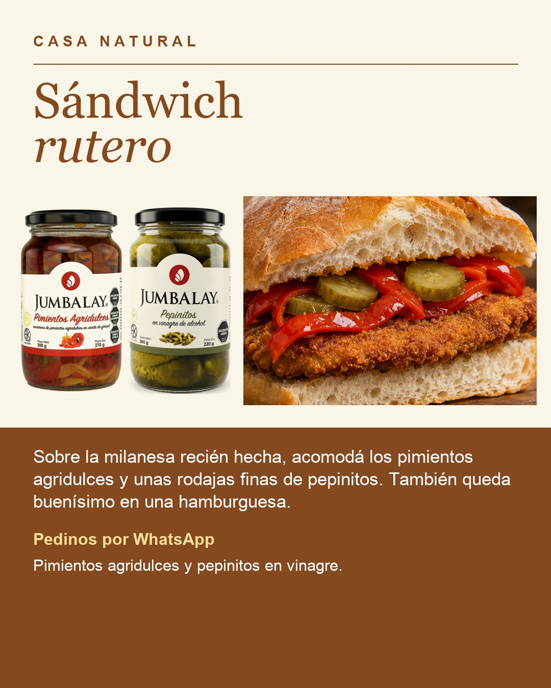

Qué necesitás
- Pan para sándwich
- Milanesa cocida o hamburguesa cocida
- Pimientos agridulces Jumbalay
- Pepinitos en vinagre Jumbalay
Ajustá las cantidades según los comensales y tu gusto.
Cómo prepararlo
- Prepará la milanesa o la hamburguesa y cocinala por completo.
- Escurrí los pimientos y cortá los pepinitos en rodajas finas.
- Armá el sándwich con la milanesa recién hecha, los pimientos y los pepinitos. Serví en el momento.